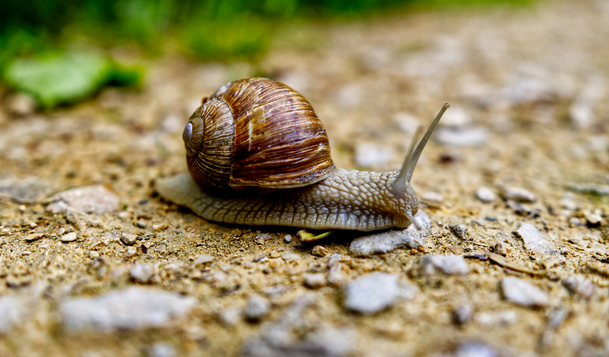

This is because most scientists define wetness as a liquid´s ability to maintain contact with a solid surface, meaning that water itself is not wet, but can make other objects wet.
Between 1,000 and 12,000 teeth, to be precise. They aren’t like ours, though, so don’t be thinking about snails with ridiculous toothy grins. You’ll find the snail's tiny 'teeth' all over its file-like tongue.
Animals can be allergic to our dead skin cells – dander. These allergic reactions can be just like ours, too, including breathing difficulties and skin irritation.